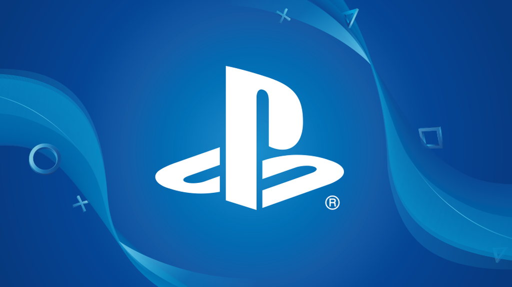
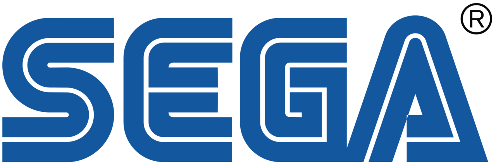

Atari es una marca que ha sido propiedad de múltiples empresas desde su creación en 1972. Actualmente es propiedad de Atari Interactive, una filial del holding francés Atari SA, conocido hasta 2002 como Infogrames Entertainment.
La primera empresa Atari Inc. fue fundada en Sunnyvale, California en 1972 por Nolan Bushnell y Ted Dabney, siendo una empresa pionera en los juegos de arcade, las consolas de videojuegos domésticos y las computadoras domésticas. Los productos de la compañía, como Pong y Atari 2600, ayudaron a definir la industria del entretenimiento electrónico desde la década de 1970 hasta mediados de la década de 1980.
Hasta la década de 1990, Atari se consolidó como una de las principales fabricantes de consolas en el mercado mundial, compitiendo con Nintendo y Sega. Sin embargo, el poco éxito de la Atari Jaguar, lanzada en 1993, llevó a una bancarrota de la empresa, la cual sería vendida una y otra vez a lo largo de los años. La empresa que actualmente maneja el nombre Atari fue fundada en 1993 bajo el nombre de GT Interactive. GT Interactive fue adquirido por IESA en 1999 y cambió su nombre a Infogrames Inc. Infogrames adquirió la marca Atari, comprándola a Hasbro Interactive, que a su vez la adquirió de manos de JTS Corporation.
Infogrames, Inc. ocasionalmente usó el nombre Atari como marca, para títulos especiales, antes de que IESA cambiara oficialmente su nombre a Atari, Inc. en el año 2003.
La compañía Atari original fue pionera en juegos arcade, videojuegos caseros, consolas y microcomputadores personales, y su dominio en estas áreas la mantuvo como la mayor fuerza en la industria de la computación y el entretenimiento desde principios hasta mediados de la década de los años 1980. La marca también fue usada varias veces por Atari Games, una división de la empresa en 1984.
La empresa ha anunciado por medio de la palabra de Fred Chesnais (CEO de la compañía) de un regreso para el mundo de las videoconsolas. "Volvemos al mundo del hardware". También ha asegurado que el diseño de la nueva consola esta siendo muy trabajado y que va a contar con una arquitectura basada en la de los PC. La compañía mostró en un vídeo de YouTube que la nueva consola se llamaría Atari VCS y por el momento el proyecto se encuentra "en desarrollo".
También la empresa ha anunciado su interés por el mercado de las criptomonedas presentando "Atari Token" y "Pong Token". Según se menciona Atari podría introducir sus monedas virtuales tanto desde la compra de juegos digitales hasta su uso para videojuegos y casinos en línea.
Nintendo Co., Ltd (任天堂株式会社 Nintendō Kabushiki-gaisha?) es una empresa de entretenimiento dedicada a la investigación y desarrollo, producción y distribución de software y hardware de videojuegos, y juegos de cartas, con sede en Kioto, Japón. Su origen se remonta a 1889, cuando comenzó a operar como Nintendo Koppai tras ser fundada por el artesano Fusajirō Yamauchi con el objetivo de producir y comercializar naipes Hanafuda. Tras incursionar en varias líneas de negocio durante la década de 1960 y adquirir una personalidad jurídica de empresa de capital abierto bajo la razón social actual, en 1977 distribuyó su primera videoconsola en Japón, la Color TV Game 15.
Sus productos incluyen algunas de las consolas y títulos más influyentes y exitosos en la industria de los videojuegos, como la Nintendo Entertainment System, la Super Nintendo Entertainment System, la Wii y la Game Boy; así como los títulos Donkey Kong (1981), Super Mario Bros. (1985), The Legend of Zelda (1986), Metroid (1986), Tetris (Game Boy) (1989), Fire Emblem (1990), Star Fox (1993) y Pokémon Red y Blue (1996), que dieron origen a sus correspondientes franquicias.
Nintendo cuenta con varias filiales en múltiples ubicaciones tanto en Japón como en el extranjero, en las cuales delega la responsabilidad de producir y distribuir sus productos, además de socios comerciales como The Pokémon Company y Warpstar, Inc.. Tanto la organización como su personal han recibido varios premios por sus logros, entre los cuales se incluyen reconocimientos Emmy de tecnología e ingeniería, Game Developers Choice Awards y galardones BAFTA de videojuegos, entre otros. Asimismo, es una de las empresas japonesas con mayor riqueza y valor en el mercado, además de poseer una de las políticas de responsabilidad social con «mejor reputación» en el mundo.
La PlayStation fue lanzada a la venta el 3 de diciembre de 1994 en Japón,el 9 de septiembre de 1995 en Estados Unidos y el 29 de septiembre de 1995 en Europa. Todo empezó con un contrato roto con Nintendo a finales de la década de 1980. Nintendo acordó con Sony, a finales de la década de 1980, desarrollar para su exitosa Super Nintendo un apéndice para incorporar juegos en disco, además del tradicional cartucho. La firma de videojuegos, sin embargo, rompió con la tecnológica japonesa, neófita entonces en la industria, porque consideró que cedió muchísimo en el control y beneficios derivados de la venta de juegos en CD.
Ken Kutaragi, que en aquella época fue un ingeniero informático de Sony apasionado por los videojuegos, propuso una consola que combinó las capacidades gráficas de una estación de trabajo y la unidad de CD-ROM de Sony. Durante dos años, Ken Kutaragi buscó sin éxito alguien en algún lugar del grupo audiovisual de Sony que respaldase su proyecto. Se trasladó, junto con su investigación, de un laboratorio a otro, hasta que Teruo Tokunaka le llevó a ver al entonces presidente Norio Ohga para exponer su idea.
La cúpula de Sony, reacia desde un principio a introducirse en el mercado de los videojuegos, intentó terminar la aventura aquí. Sin embargo, la obstinación de Kutaragi hizo que la compañía siguiese adelante. La empresa derivó el proyecto con Kutaragi a cargo a Sony Music para no responsabilizarse de las impredecibles consecuencias de la apuesta. La colaboración, a la postre, fue fundamental para la producción de discos. Hasta 1993, la compañía no tendría una sección propia de videojuegos, Sony Computer Entertaiment.
Sony lanzó la PlayStation en el Japón el 3 de diciembre de 1994. El éxito fue inmediato. La clave estuvo en las facilidades ofrecidas por la compañía a los desarrolladores de videojuegos, entusiasmados con las grandes posibilidades técnicas, las tres dimensiones y el disco. Los desarrolladores tomaron varios riesgos económicos creando cartuchos para Sega o Nintendo; por el contrario, Sony ofreció todas las facilidades a fin de tener un catálogo variado de juegos. Enseguida se sumaron los grandes del sector. Títulos como Gran Turismo, Metal Gear o Final Fantasy son historia fundamental de los videojuegos.
El salto a Europa y los Estados Unidos también fue exitoso. Sony optó rebajar el precio de su consola por debajo del costo. El lanzamiento en los Estados Unidos fue a un precio de 299 dólares, muy por debajo de los 399 dólares de su principal competidora, la Sega Saturn, barrida completamente. Al contrario de la tendencia de la industria, Sony intentó obtener beneficios derivados del software y no solo del hardware. Y lo hizo: las ganancias de Sony Computer Entertaiment supusieron el 90% de la compañía.
La primera versión de la PlayStation superó los cien millones de unidades vendidas nueve años después de lanzarla.
Sega Games Company Limited (株式会社セガゲームス Kabushiki gaisha Sega Gēmusu?), inicialmente conocida como Sega Enterprises, Ltd. (株式会社セガ・エンタープライゼス Kabushiki gaisha Sega Entāpuraizesu?) y posteriormente como Sega Corporation, es una empresa japonesa desarrolladora de software y hardware en el campo del entretenimiento (videojuegos). Es una de las marcas de videojuegos más respetadas del mundo. SEGA ha tenido una larga historia de éxitos tanto en el mercado de los arcades como en el de las consolas, pero a partir del lanzamiento de Sega Dreamcast, Sega está fuera del mercado de las consolas domésticas, para el que solamente se dedica a la programación de videojuegos y fabricación de algunos periféricos para máquinas de otras compañías. Sin embargo, continúa el desarrollo de hardware para máquinas recreativas. La mayoría de oficinas centrales de SEGA se encuentran en Tokio, Japón. Sega Australia cerró sus puertas en 2012, pero los juegos en Australia son distribuidos por Five Star Games.
Xbox es una marca de videojuegos creada por Microsoft que incluye una serie de videoconsolas desarrolladas por la misma compañía, de sexta a octava generación, así como aplicaciones (juegos), servicios de streaming y el servicio en línea Xbox Live. La marca fue introducida por primera vez el 15 de noviembre de 2001 en los Estados Unidos, con el lanzamiento de la consola Xbox.
Dicho dispositivo original fue la primera consola de videojuegos ofrecida por una empresa estadounidense después que de la Atari Jaguar detuvo ventas en 1996. La consola llegó a más de 24 millones de unidades vendidas hasta el 10 de mayo de 2006. La segunda consola de Microsoft, Xbox 360, fue lanzada en 2005 y ha vendido más de 85.6 millones de consolas en todo el mundo hasta junio del 2015. La sucesora de Xbox 360 y la consola de Microsoft más reciente, Xbox One, fue revelada el 21 de mayo de 2013. Xbox One ha sido lanzada en 21 mercados de todo el mundo el 22 de noviembre de 2013, siendo el Reino Unido el primer país.